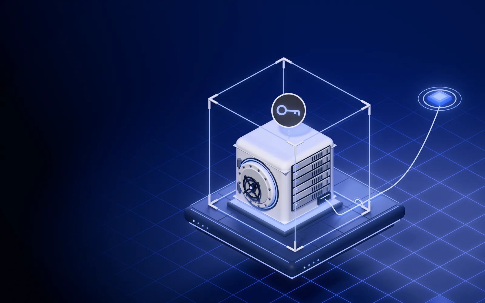

On requestVidimus Private
Your own environment, the time and the anchor out of your reach.
For organisations that cannot or do not want to use a shared platform. Your own keys, your own address and the integration with your system, built by us. Timestamps and anchors come from outside.
from €25,000 set-up + €18,000 a year · we set up the environment after signing
Includes up to 100,000 registrations a month; above that, the normal rates.

One environment, for one organisation.
Your own environment
Vidimus, set up separately for your organisation and not shared with other customers. If it is not on your premises, Vidimus manages the servers.
Your own keys
You hold the key that opens your content and your own certificate authority (CA). We configure them at set-up.
Your own address
Your people and your systems work at an address that belongs only to your environment.
The integration, built by us
We build the connection between your system and your environment.
Your own environment, not your own truth.
Proof from your own system remains your own word. That is why this stays out of your reach, and out of ours.
Inside your frame
- the environment and its address
- your keys and your CA
- your records and your system
Outside it
- The time
- The timestamps with evidential value come from an external timestamping service, not from you and not from us. The time in the record itself is what the device stated.
- The anchor
- Anchors are in Bitcoin. If someone changes a record, it no longer matches for anyone who checks, even if you or we were to try. Nobody can check what is not presented.
- The check
- Whoever receives the bundle can check it without Vidimus and without your system. For the content, the document is needed too.
The check above is a record on the shared platform. Vidimus does not judge, it compares. Verify it yourself
You hold the content key and the CA, not us.
Vidimus receives fingerprints, signatures and the encrypted content, and what the environment needs to work: accounts, certificates with names and technical history. Without your key, we cannot open your documents. The software that uses the key does come from us.
| Key | Who holds it |
|---|---|
| Signing key of peopleshows who recorded something | Their own phone. |
| Signing key of systems and measurement sourcesshows which device recorded it | Agreed at set-up: in your system or at Vidimus. |
| Certificateslink a key to a name | You, in your own CA that we configure at set-up. That way Vidimus cannot issue a certificate in your name. |
| Content keyopens your documents | You, and whoever you share the content with yourself. Devices and systems encrypt before sending. |
| Recoveryif a key is lost | You, in a recovery file with a passphrase. You create it before you start. |
The trade-off: if you lose both the key and the recovery file, the content stays unreadable, for us too. What our server cannot read, it cannot search either.
Exceptions: we fetch a web page that we record for you ourselves. Measurements are numbers in plain text. We can read replies from a counterparty and your people's agreements, because we record them ourselves.
Not available yet: recovery split across several people, and your own security hardware (HSM).
Set-up, then a subscription.
| Type | Set-up | Subscription |
|---|---|---|
| Own environmentone organisation, set up by us | from €25,000 | €18,000 per year |
Includes up to 100,000 registrations a month; above that, the normal rates. Included in the subscription: the servers, the timestamps, the updates, the monitoring and the support of your environment. Larger organisations or installation on your premises: on quote. Prices excl. VAT.
When a shared platform is not an option.
It is about your requirements, not your sector
For organisations that cannot or do not want to use a shared platform: for example law firms, banks, pharma and public authorities. These are examples, not limits.
When you do not need it
- Can your organisation use the shared platform? Then you do not need Private: on the shared platform you start from €0 a month.
- See the pricing of the shared platform
What you want to know.
Is the environment ready straight away?
No. Vidimus Private is on request: we set up the environment per customer, after signing. What you can already check today is a record on the shared platform.
If the environment is our own, why is the proof independent?
Because the time and the anchor are not in your hands. The timestamps with evidential value come from an external timestamping service, and the anchors are in Bitcoin. What you record remains your own statement.
Can it also be installed on our premises?
That is possible on quote. No installation is running yet; we build it after signing. Even then, timestamps and anchors come from outside.
Can we pay in one go?
For a fixed term, yes, on quote. With an agreed volume and always with an end date.
Who holds the keys?
You hold the content key and the CA, not Vidimus. People sign with their own phone and the certificates come from your own CA. Where the keys of systems and measurement sources are kept is agreed at set-up. If you lose both the key and the recovery file, we cannot retrieve the content.
Does this suit your organisation? We can work that out in 15 minutes.
Together we look at which system you want to connect and whether you need your own environment. If it fits, we set it up after signing.